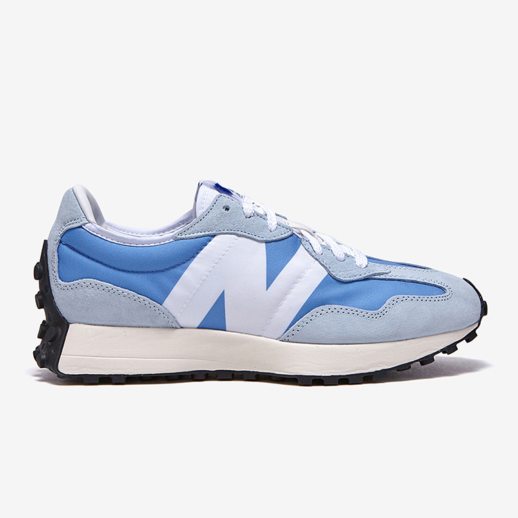
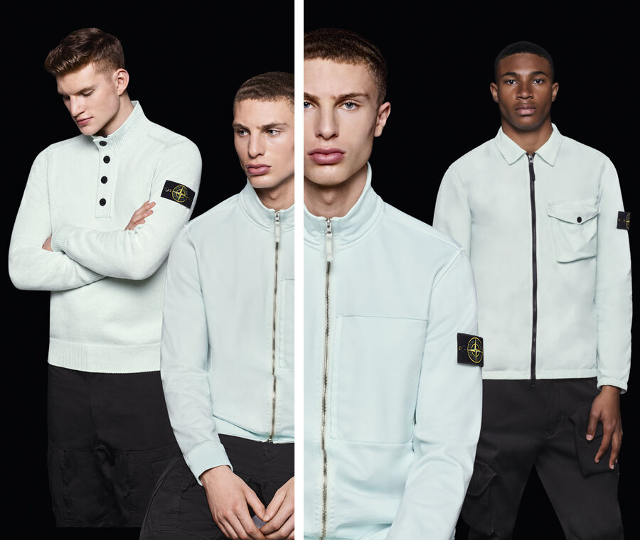
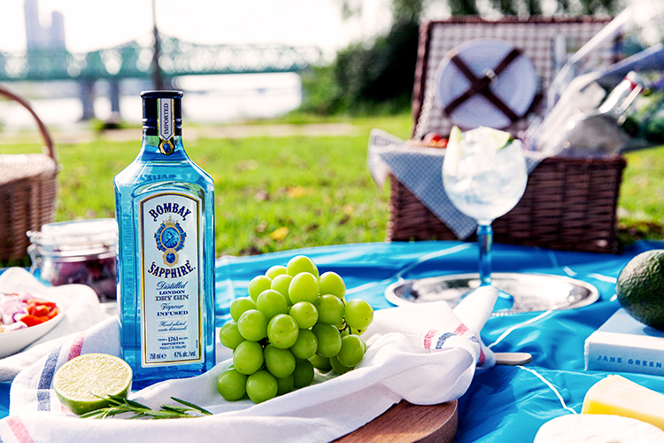

청량감 폭발! 뉴발란스 327 블루 인기 급상승
뉴발란스 327 블루 신상품 인기 524위 급상승
1970년대 빈티지 러닝 스니커즈에서 영감 얻은 스니커즈
청량감 넘치는 블루 컬러가 인기 비결

뉴발란스의 새로운 아이코닉 스니커즈로 자리 잡은 327 신상품이 무신사 스토어 실시간 랭킹 상위권에 등장했다. 청량감 넘치는 블루 컬러가 7월 23일 11시 발매와 동시에 전체 카테고리 2위에 오르며 가파르게 순위가 상승했다.
함께 발매한 4가지 종류의 574 모델 또한 327의 폭발적인 반응에 힘입어 점차 스니커즈 카테고리 상위권으로 모습을 드러내는 중이다.
뉴발란스의 327은 1970년대에 발매한 빈티지 러닝 스니커즈에서 영감을 얻은 아이템. 2020년 여름에 처음 발매해 선보이는 족족 품절을 기록하는 인기 모델로 급부상했으며 인기 컬러인 블랙은 2배 가까운 프리미엄을 기록하기도 했다.
어퍼는 가볍고 편안한 폴리에스터 소재를 사용했으며 마모가 쉽게 일어나는 토, 뒤꿈치 등 일부는 견고한 성질과 고급스러운 느낌을 주는 스웨이드를 더해 보완했다.
특히 이번에 발매한 327은 한여름의 더위를 해소하는 청량감 넘치는 분위기로 선보여 각별한 인기를 얻은 것으로 분석된다.
지금 뉴발란스 무신사 스토어를 확인해 327 블루뿐만 아니라 베이지, 와인, 네이비, 그린 등 톡톡 튀는 개성을 담은 시즈널 컬러로 꾸민 574 스니커즈 신상품도 함께 확인하자.
Stone Island 새로운 FW_’021 ’022 컬렉션
STONE ISLAND
Stone Island는 1982년도, 볼로냐 태생의 아트 디렉터이자 지식인 Massimo Osti에 의해 이탈리아의 라바리노에서 캐주얼 의류 브랜드로 탄생한 이래 연구와 실험, 기능성 추구를 원칙으로 삼고 있습니다. 창립 이듬해인 1983년도에 이미 GFT 그룹에서 일하던 Carlo Rivetti는 Stone Island의 지분 50%을 매입했고, 십년 후 1993년에 Carlo와 Cristina 남매는 회사 전체를 입수하여 브랜드 고유의 정체성을 그대로 이어 발전시키게 됩니다.
섬유 혁신
혁신적인 디자인과 접목된 최첨단 섬유 개발의 상징으로 자리 잡은 Stone Island는 탄생 초기부터 스포츠웨어에 대한 새로운 정의를 제시하며 대중들로부터 열렬한 호응을 받았고, 오늘날에도 여전히 현대적인 룩을 추구하는 모든 젊은 세대로부터 사랑받고 있습니다. Stone Island의 진정한 원동력은 Sportswear Company의 연구팀에서 지속적인 실험을 통해 개발한 완성된 의상에 대한 특수 염색 및 가공법에 있습니다. 최첨단 기술과 전문 인력의 경험 및 능력이 완벽한 조화를 이루는 연구팀은 지금까지 60,000여 종류에 이르는 염색공법을 개발했습니다.

라이프 | 봄베이 사파이어 칵테일 레디백으로 홈 미니 바 완성!
- 봄베이 사파이어 칵테일 레디백 단독 한정 발매
- 벌룬 글라스, 하이볼 글라스, 바스푼, 지거 등의 키트 구성
- 다양한 장소에서 가볍게 가지고 다니기 좋은 사이즈
이번 봄베이 사파이어 칵테일 레디백은 봄베이를 상징하는 청량감 가득한 블루 컬러의 캐리어 백 디자인이 돋보인다. 홈 칵테일, 캠핑, 피크닉 등 언제 어디서나 ‘프라이빗 바’로 쉽게 활용할 수 있으며 넉넉한 수납력을 지녀 여행용 미니 캐리어로도 가지고 다닐 수 있다. 키트 구성품으로는 벌룬 글라스, 하이볼 글라스, 바 스푼, 지거, 머들러, 주얼 스터러, 피크닉 매트리스로 구성됐다. 우아함을 더하고 싶을 때는 벌룬 글라스를, 가볍게 즐기고 싶을 때는 하이볼 글라스로 마실 수 있는 두 가지 전용 잔이 돋보인다.